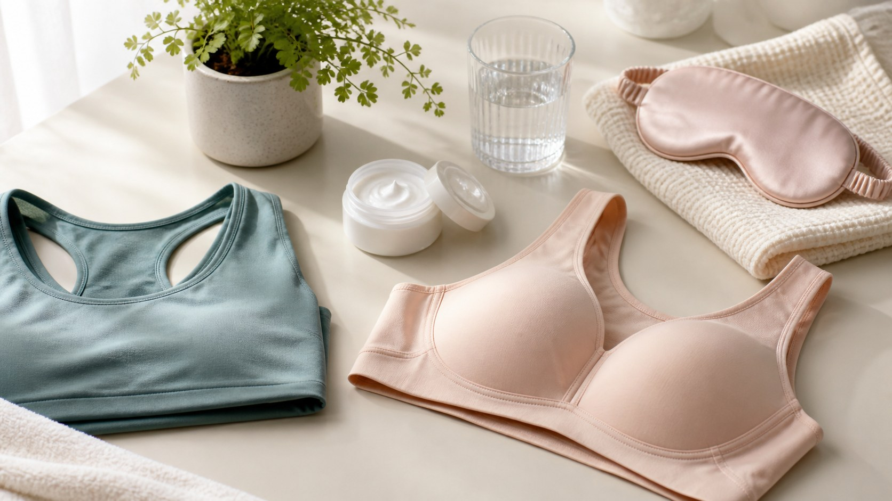

健康护理
乳房日常护理｜穿对、养好、动起来，剩下的交给健康
内衣怎么选、皮肤怎么养、运动该怎么穿、作息和情绪怎么管——这些生活里的小事，才是对乳房最实在的日常照顾。不用过度焦虑，把一件件小事做好就够了。

乳房最需要的不是「特别的保养」，而是「日常的照顾」。它本身就是身体的一部分，跟着人的整体状态走。这一篇不讲玄乎的排毒、按摩、丰胸偏方，只讲几件每个人都能做到、也真正有用的小事。
先说明一下：市面上那些「按摩养生」「排毒通乳」「精油丰胸」的说法，大多缺乏可靠的依据，做不好反而可能刺激到组织。保护它最好的方式，是把它当成身体的一部分去对待——好好穿内衣、好好运动、好好睡觉、好好吃饭，别用不确定的手段去折腾它。
内衣的选择，记住三个词：合身、支撑、透气。合身最重要——钢圈不要压迫到腋下和下缘，罩杯大小合适，既不勒也不空；支撑体现在日常、运动等场景里，能给出合理的承托，减少晃动和拉扯；透气则是材质和剪裁让人舒服，避免闷热潮湿。肩膀勒出红痕、下围勒出印子、腋下被钢圈顶到，都说明尺码或款式不合适，值得重新挑一件。尺码也会随体重、阶段变化，别一穿到底。
皮肤的护理其实很简单：洗澡用温水，别用太热的水，也别过度搓洗；平时让这一处的皮肤保持干爽、透气，不要反复抓挠或挤压。乳房是皮肤和腺体组织，不是需要「去角质」「提拉」的特殊部位。涂润肤乳按正常的身体护理来就行，不需要额外的手段。
运动这件小事，常常被忽略。运动有很多好处，但运动中乳房会晃动，所以做跑步、跳绳这一类运动时，记得穿上专门的运动内衣，提供更好的吸震和承托，才更舒服、也少些牵扯。如果是瑜伽、普拉提这类低冲击运动，选支撑适中的宽松内衣即可。运动后及时换上干爽的衣物，保持舒适。
再说作息和情绪。乳房会跟着激素和身体状态起伏，长期熬夜、压力大、情绪紧绷，很多人会感觉经前的胀痛更明显。规律作息、适当运动、给自己减压，不只是在照顾乳房，更是在照顾全身。这些都做到位了，很多不舒服会自然缓解。
最后是饮食，也是容易被过度焦虑的一项。常听到「吃什么对乳腺好、吃什么会得病」，其实乳房健康不吃「某一种神奇食物」，也不靠「戒掉某几种」来保证。均衡饮食、荤素搭配、体重不至于过度肥胖或偏瘦，就是最稳妥的做法。别因为一句「这个不能吃」就把自己搞得很紧张——放松本身，就是对身体好。
如果你问日常护理最重要的是什么，答案可能很朴素：把自己照顾好，定期体检，该就医时及时就医。剩下的那些「大小和形状」，本来就因人而异，健康就好。
本文用于公众健康教育，不构成医疗建议，不替代面诊。医美决策请与具备资质的医师面诊后作出。